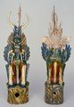

|  |
Chinese (Tang dynasty) |
Look
- The technique used to glaze the earth spirits is called san t'sai,
which means "three color." What colors do you see on these figures?
How do you think they were applied? Were they painted? Splashed? Dripped?
How can you tell?
- Do you think these figures were made (a) on a potter's wheel, (b)
using the coil method, (c) with a mold, or (d) by the slab method? Explain
your answer.
- What is the hole in the pedestal for? Do you think the figures are
hollow or solid? Why do you think so?
- Describe these creatures. What kind of creatures are they? What animal
features do you see? What human parts? Notice that the face of one of
the figures is not glazed. Is it an animal or a human face? Why might
the face have been left unglazed?
- Do the earth spirits look strong or weak? Explain your answer. How
would they behave if you met them? Why do you say that? How would you
behave? Would you be frightened? Delighted? Bored? Excited? Angry? Happy?
Why or why not?
- Do you think the earth spirits would be difficult to make? Why or
why not? What can you tell about the technical expertise of Tang dynasty
artists by looking at these figures?
Think
- Cobalt blue glaze was very rare and expensive and had to be imported
into China. Why might an artist have used cobalt glaze on the earth
spirits? What does this signify?
- Do you think that these figures would be costly to make? Why or why
not? Do you think most people could afford to have figures such as these
in their burial chambers? Why do you say that?
- These figures were made to accompany and protect the dead in the afterlife.
In what ways would they be good company or protection? Why do you say
that? Why do you think these figures might be called earth spirits?
- Based on your observations of these figures, would you say the Tang
dynasty was a time of prosperity or of poverty? Why?
- Do you think that the artist who created these figures was more interested
in (a) realism (b) the function of the objects, or (c) personal expression?
Explain your answer.
- Tomb figures such as the earth spirits were often very expensive to
make and a symbol of status in Tang dynasty China. Before the imperial
decree limiting the size and number of tomb pieces, some families were
faced with financial ruin in their efforts to compete with their neighbors.
How do people display wealth and status in our culture today? Can you
tell that a person was wealthy or important if you visit a cemetery
in the United States?
- If you could bring one object into an afterlife or eternity, what
would you bring? Why do you say that? What purpose would it serve?

Key ideas.
Where does it come from?
What does it look like?
How was it used?
How was it made?
Discussion questions.
Additional resources.
Select another piece.